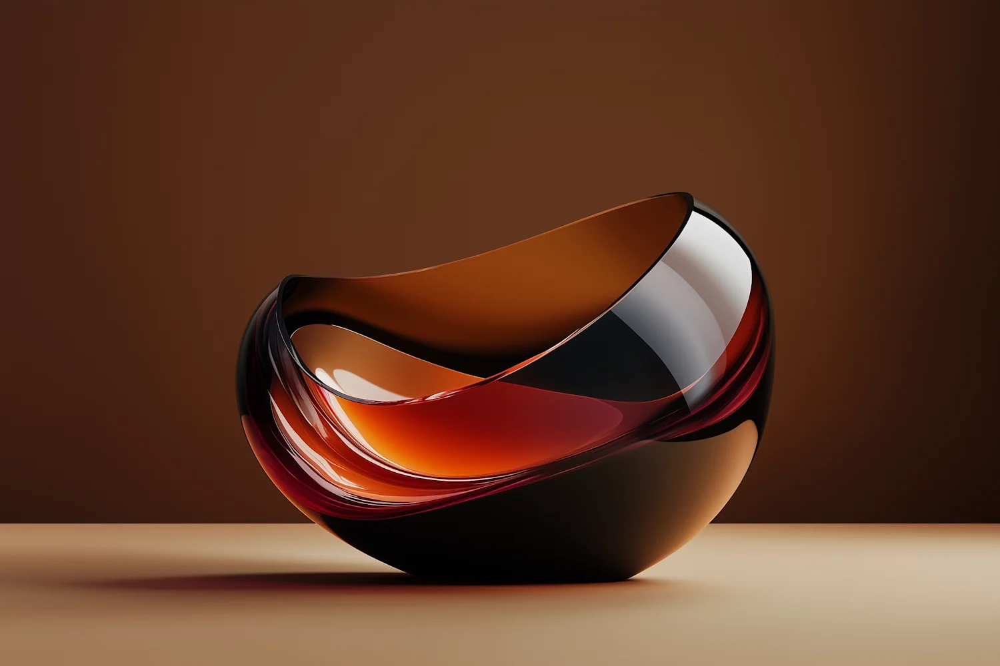
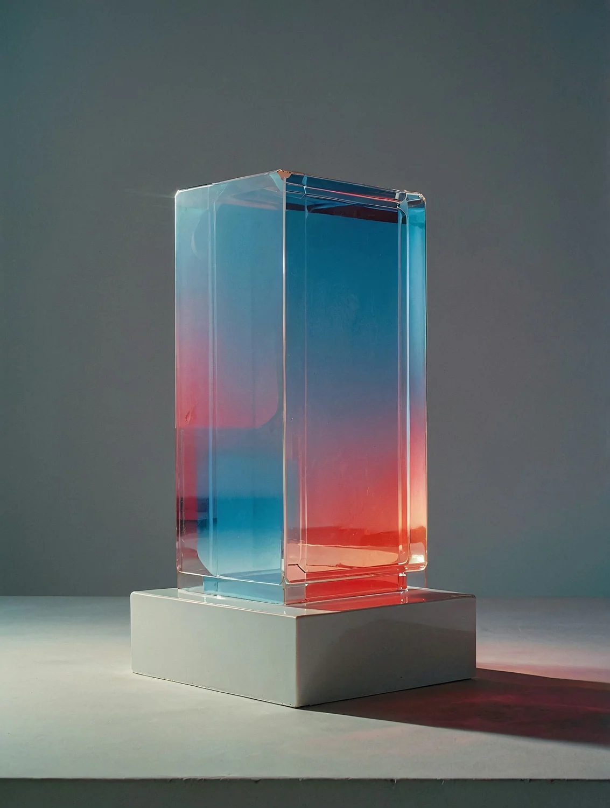

F/iObjects / IndexForm IndexAn independent journal of objects and materials.Next in the indexLight in resin
F/iObject indexObject 02 / ResinLight in resinA column of colour. Light passes through the cast form and gathers along its edges.